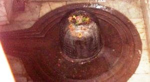

<?xml version="1.0" encoding="UTF-8"?><rss version="2.0"
	xmlns:content="http://purl.org/rss/1.0/modules/content/"
	xmlns:wfw="http://wellformedweb.org/CommentAPI/"
	xmlns:dc="http://purl.org/dc/elements/1.1/"
	xmlns:atom="http://www.w3.org/2005/Atom"
	xmlns:sy="http://purl.org/rss/1.0/modules/syndication/"
	xmlns:slash="http://purl.org/rss/1.0/modules/slash/"
	>

<channel>
	<title>Harishchandreshwar &#8211; Varanasi Temples</title>
	<atom:link href="index.html" rel="self" type="application/rss+xml" />
	<link>../../../../../index.html</link>
	<description>Temples of Varanasi as referred to in Kashi Khand</description>
	<lastBuildDate>Thu, 19 Jun 2025 05:16:46 +0000</lastBuildDate>
	<language>en-US</language>
	<sy:updatePeriod>hourly</sy:updatePeriod>
	<sy:updateFrequency>1</sy:updateFrequency>
	<generator>https://wordpress.org/?v=4.6.29</generator>
	<item>
		<title>HARISHCHANDRESHWAR</title>
		<link>../../../../../shiva-temples/harishchandreshwar/index.html</link>
		<pubDate>Mon, 10 May 2010 02:17:26 +0000</pubDate>
		<dc:creator><![CDATA[admin]]></dc:creator>
				<category><![CDATA[Harishchandreshwar]]></category>
		<category><![CDATA[Other Shiva Temples (E-K)]]></category>
		<category><![CDATA[Shiva Temples]]></category>
		<category><![CDATA[chandr]]></category>
		<category><![CDATA[haris]]></category>
		<category><![CDATA[harish]]></category>
		<category><![CDATA[sankata devi]]></category>
		<category><![CDATA[swarg dwar]]></category>
		<category><![CDATA[vasukeshwar]]></category>

		<guid isPermaLink="false">../../../../../p=363.html</guid>
		<description><![CDATA[Lord Vishnu was describing various religiously important places, teerths etc. to Sage Bindu (Kashi Khand, Chapter 61).  He described the boundaries of Manikarnika which extended upto River Ganga in the east, Swarg Dwar in the west, Ganga Keshav in the  South and Harishchandra Mandap in the north. A devotee who bathes in Harishchandra Teerth and [&#8230;]]]></description>
				<content:encoded><![CDATA[<p>Lord Vishnu was describing various religiously important places, teerths etc. to Sage Bindu (Kashi Khand, Chapter 61).  He described the boundaries of Manikarnika which extended upto River Ganga in the east, Swarg Dwar in the west, Ganga Keshav in the  South and Harishchandra Mandap in the north.</p>
<p>A devotee who bathes in Harishchandra Teerth and performs rituals for his forefathers is purified. The devotees should worship Harishchandreshwar nearby.  Such devotees will always be truthful.</p>
<p></p>
<p style="text-align: center;"><strong>(HARISH CHANDRESHWAR)</strong></p>
<p>Philosophically speaking there has always been debate about ULTIMATE TRUTH in life.  People who visit various Satsangs (company of sublimated souls) and religious discourses are pondering about one main point which is TRUTH. There are various factors in life which one has to consider and the compiler does not want to take much of the readers’ time in discussing these aspects. If all people simply follow the path of truthfulness in life, then the entire humanity will prosper.  Kashi Khand has sought to give this message.</p>
<p>Another point is worth mentioning here.  Kashi has two burning Ghats (cremation grounds) viz. Manikarnika Ghat and Harishchandra Ghat.  People generally believe that Raja Harishchandra was involved with Harishchandra Ghat. That is not so.  Harishchandra Ghat came into being at a very later stage.  He was involved with the cremation ground nearer to Manikarnika and there is a Shiv Ling installed by him by the name of Harishchandreshwar which has been referred by Kashi Khand.</p>
<p>&nbsp;</p>
<p><strong>&#8212;&#8212;&#8212;&#8212;&#8212;&#8212;&#8212;&#8212;&#8212;&#8212;&#8212;&#8212;&#8212;&#8212;&#8212;&#8212;&#8212;&#8212;&#8212;&#8212;&#8212;&#8212;&#8212;&#8212;&#8212;&#8212;&#8212;&#8212;&#8212;&#8212;&#8212;&#8212;&#8212;&#8212;-</strong></p>
<p><strong> </strong></p>
<p><span style="text-decoration: underline;"><strong>Kashi Khand, Chapter 97, Shlok 248</strong></span></p>
<p><strong> </strong></p>
<p><strong>राज्यप्राप्तिर्भवेत्पुंसां हरिश्चन्द्रेशसेवया</strong></p>
<p>&nbsp;</p>
<p><strong>Devotees who worship Harish Chandreshwar and serve this Lord will get kingdom.  (In today’s perspective this can mean high post or success in politics).</strong></p>
<p><strong> </strong></p>
<p><strong>&#8212;&#8212;&#8212;&#8212;&#8212;&#8212;&#8212;&#8212;&#8212;&#8212;&#8212;&#8212;&#8212;&#8212;&#8212;&#8212;&#8212;&#8212;&#8212;&#8212;&#8212;&#8212;&#8212;&#8212;&#8212;&#8212;&#8212;&#8212;&#8212;&#8212;&#8212;&#8212;&#8212;&#8212;&#8212;</strong></p>
<p>&nbsp;</p>
<p><strong><span style="text-decoration: underline;">LOCATION OF HARISHCHANDRESHWAR</span></strong></p>
<p>Harishchandreshwar is a huge Shiv Ling located at Ck.7/166, Sankata Ghat.  People can travel upto Chowk by rickshaw and walk upto this place through Sankata Devi temple, which is a famous landmark.  They can also travel by boat upto Sankata Ghat and climb the steps.</p>
<p>&nbsp;</p>
<p><strong>Please watch our YouTube Video about Harish Chandreshwar at following Link</strong></p>
<p>&nbsp;</p>
<p><a href="https://www.youtube.com/watch?v=1L2fcmL5Rx8&amp;t=11s">https://www.youtube.com/watch?v=1L2fcmL5Rx8&amp;t=11s</a></p>
<p>&nbsp;</p>
<p>&nbsp;</p>
<p><strong><span style="text-decoration: underline;">TYPES OF POOJA</span></strong></p>
<p>This powerful Shiv Ling is located inside a private house and devotees can have darshan through a window.</p>
]]></content:encoded>
			</item>
	</channel>
</rss>
